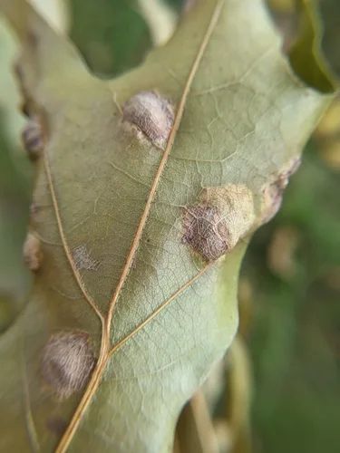

Raised blisters and hollows in oak leaves
An oak leaf can develop raised islands of tissue as it unfolds. Feeling the shape and comparing the two surfaces reveals a pattern that a flat photograph of a brown patch can miss.

Inspect the plant
Hold an affected oak leaf sideways. A broad dome on one surface corresponds to a shallow depression on the other, often while surrounding tissue is still green. Choose a fresh blister as well as an old brown one for photographs. Once the raised tissue dries and collapses, its original shape may be hard to reconstruct.
Distinguish similar signs
Look at a cluster of young leaves after a cool, wet spring. A discrete enclosed gall or a trail winding through the tissue suggests a different cause.
Choose a response
Keep functioning leaves on the tree. On an otherwise vigorous landscape oak, scattered blisters usually warrant observation rather than treatment.
Follow up
Mark an affected branch and record whether the next flush has blisters. Seek diagnosis if leaves blacken rapidly or whole branches wilt.
A detail to record
Flatten the unaffected edge of an oak leaf against a card without pressing the blister. A side photograph now shows which way the raised tissue curves and whether the leaf blade remains continuous across it.
Compare leaves from one spring flush
Label a twig carrying both blistered and normal oak leaves before the canopy fills in. Check whether a later flush from the same twig is also blistered. Mixing early and late leaves in one photograph can make old lesions look like a new outbreak.